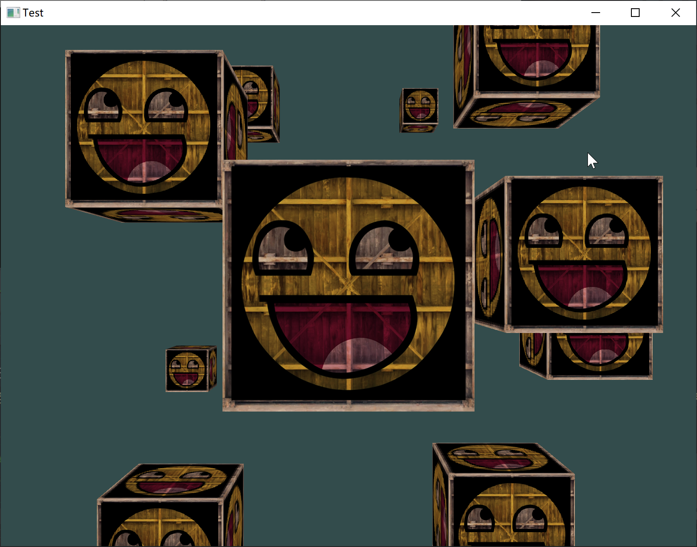

翻转一个vector
1 | vector<int> t = {1, 2, 3, 4, 5}; |
remove函数
先放源码
1 | template <class ForwardIterator, class T> |
大意就是将区间内与val相同的value放到区间的最后，并返回第一个值为val的地址。
tie函数
更加方便将tuple的值直接assign到多个变量。
1 | queue<tuple<int, int, int>> q; |
翻转一个vector
1 | vector<int> t = {1, 2, 3, 4, 5}; |
remove函数
先放源码
1 | template <class ForwardIterator, class T> |
大意就是将区间内与val相同的value放到区间的最后，并返回第一个值为val的地址。
tie函数
更加方便将tuple的值直接assign到多个变量。
1 | queue<tuple<int, int, int>> q; |
这道题乍一看挺复杂的，不能直接套用bfs的模板做题。但其实理解了题目之后就非常简单了。。。（说到底就是智商不够）。
1 | class Solution { |
这里我们使用了传统的bfs方法遍历整个graph，但是我们加入了一个visited二维数组来储存到达每个点穿过的最少obstacles的数量。因为bfs是一层一层进行的，所以后被遍历到的点使用的步数一定比之前的大。假如穿过的obstacles数量还更大，那么便没有利用的价值了。所以接下来遍历的时候，只将obstacle数量小于当前数量的走法进队列。最后在队列出口处加一段判断终点的代码。（完美，要是在比赛的时候能想出来就好了）。
最近重装Windows 10（因为一些不可抗力），对于如何将windows 10打造成cs系自闭学生的代码环境深有体会。于下文讲解一二。
首先，你需要有一个非常帅气的bash（就像Linux平台一样）。但是众所周知，windows自带的powershell和cmd非常的丑，特别是powershell，虽然字体还算不错，但是那个深蓝的背景是什么鬼？？？果然微软内部有蓝色巨人的内应（什么玩意）。当然，我也曾经尝试过第三方的terminal，比如msys2和cmder。msys2内置pacman，安装应用自然是非常方便，但是硬伤也很明显：不清真。外观丑陋，一股浓浓的win7和xp的结合体风格（现在是9012年了喂）。cmder也不是最终解决方案：这个软件是portable version，和系统并不是深度结合，令完美主义者抓狂，而且有时候下载的软件会报错（没错就是这样）。所以，我们选择windows terminal。这个终端软件在2019年初的microsoft build大会第一次与世人见面（没错微软传统的预览版）。据说2019年底能出正式版（假的吧，我现在还没见着正式版呢，于2019年12月中旬）。当然，就算预览版，还是非常好用的。windows terminal其实就是给每个终端软件再加一个壳，所以其内核还是用户自己选择的bash软件（一般是都是cmd或者powershell）。下载方式：在microsoft store里下载。
当然，选择了shell之后，我们还是需要选择真正的bash程序。这里我们放弃powershell，因为powershell的弱智的deep♂蓝色背景（没错又是它）。这里，我们选择powershell core。这是一个与powershell类似，但跨平台的powershell终端软件（微软还是干了件大好事）。安装方式：上微软github页面下载msi。
最后，还要调整下windows terminal的设置。这里大概设置了下配色和快捷键和调用powershell core（直接复制粘贴就行了，别问）。
如果进行到这里，一个还算漂亮的与windows深度绑定的与linux风格非常像的terminal软件算是完成了。之后我们还需要了解下windows下的cli软件。
首先是包管理软件。这里我们选择chocolately。安装方式：上官网看教程。安装完choco之后就可以以linux方式安装cli软件了（真的非常方便）。
一般来说cs的苦逼学生还需要c/c++编译器和python解释器。c/c++我推荐clang（因为体验还算可以）。llvm官网有windows的prebuild binaries版本，直接下载安装就行。运行clang需要vs的支持。这里只要安装vs最新版的c/c++核心功能就行，不需要完整的vs（可以只安装microsoft c++ toolset from command line）。
最后需要安装的就是我们的python啦。有意思的是，python在微软商店有售，如果不想整msi安装包可以直接去微软商店下载（一般来说在microsoft store下载的程序更干净，更容易卸载）。
在这里一个cs学生的windows 10就设置完毕啦。之后想装什么cli软件可以通过choco下载。
强烈安利surface pro系列（没错我就是微软的舔🐕）。
其实就是对光照的封装。。。
开始学光照惹。。。
有种不好的感觉
ambient -> diffuse -> specular -> combined(Phong)
将当前点的法向量和光线向量做点乘，就能得到当前点的环境光下的颜色
将一个平面上的一点的法向量乘以这个点到光源的向量再乘上环境光的颜色，就可以得到这个点的漫反射的值。
1 | vec3 lightDir = normalize(lightPos - FragPos); |
计算平面上一个点的光反射向量与观察者到此点的向量的点成得到角度的cos值，通过cos值加权计算得到lightColor在此处的权重，最后与ambient和diffuse一起得到此处的光照。
1 | vec3 cameraVec = normalize(cameraPos - FragPos); |
一个颜色为v1的物体在颜色为v2的光源的照射下的颜色是v1 * v2。
所以假如环境是环绕光（就是不是单点光源的那种），只要给渲染出来的图像乘个光源的颜色就行了。
代码不放了，就几行2333
1 | glUniform3f(glGetUniformLocation(shader->ID, "objColor"), 1.0f, 0.5f, 0.31f); |
giligili 爱，不作死就不会die
扯远了。。。
直接贴代码：
1 | // Camera.h |
1 | // Camera.cpp |
最重要的是pitch、yaw和target向量之间的转换。明白这些，camera章节基本是理解了。

重点：
1 | for (unsigned int i = 0; i < 10; i++) { |
用一个循环读取每个顶点的数据，绘制一个正方体
使用教程提供的vertices构建程序
加入直接绘制图像，会出现穿模现象：就是图形背面会绘制在图形正面。
解决方法：（Z缓冲）
1 | glEnable(GL_DEPTH_TEST); |
学学坐标系统罢。
Local Space：
相对于本地的坐标
World Space：
在整个世界的坐标
Camera：
摄像机有个拍摄坐标和角度
生成坐标的代码：
1 | glm::mat4 modelMat; |
将值传入vertex shader：
1 | gl_Position = projMat * viewMat * modelMat * vec4(aPos.x, aPos.y, aPos.z, 1.0f); |
顺序需要反着写。（别问我为啥
不放全部代码了。